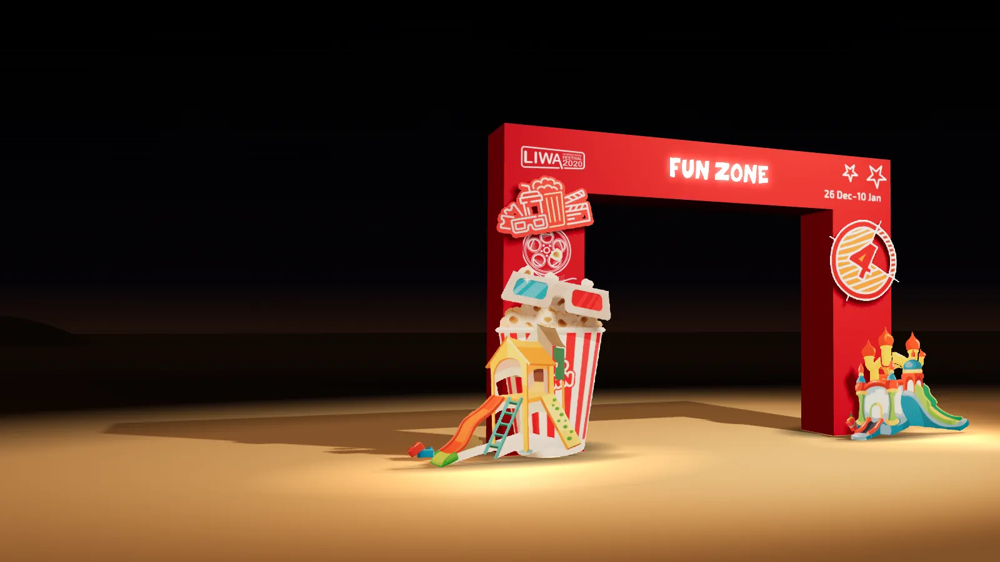

LIWA
Let the desert challenges begin.Campaign by AntBrush · Creative Director, Brand & Experiential: Antoni Gerges
Desert sport set the pace. I led the campaign and six commissioned zones through AntBrush, bringing our creative team and production partners together around one idea: Let the desert challenges begin.
Read more
Liwa International Festival 2020 ran at Tal Moreeb, Abu Dhabi, from 26 December 2019 to 10 January 2020: sixteen days at the foot of a 984-foot dune, four hours from Dubai.
Client: Abu Dhabi Sports Council. AntBrush was the main agency, on a US$1 million festival contract: the campaign, the brand and the six commissioned zones.
The sports were the festival’s own: the hill climb up Tal Moreeb, drifting, horse and camel races, among its 14 competitions.
The sports films on this page are cut from the festival film, which is made from footage of earlier editions.
Three routes went to the client. The client chose the letters: LIWA, the size of dunes, with every sport bursting out of them.


The key visual, two posters (Ready?!! and Let the desert challenges begin), the outdoor artwork, the lamppost banners, social posts, and the sign system for the site.
The kit, in our revised designs of 6 December 2019: the VIP kit (bag, box, folder and invitation), access cards and lanyards, the brochure with the race schedules, wristbands, flags, and T-shirts and jackets for the organisers and security.
The 3D scenes are models made for this portfolio from the campaign’s own artwork and working files: the outdoor artwork and the lamppost banners on the road in, three of the nine sign panels, and the Liwa Land gate.
On the sign panels the festival’s logo is the lower rectangle of the final logo, at its printed size, and the labels are shown in English. The gate’s pieces are at the sizes written on our elevation of 23 December 2019; its arch is an estimate.
The three films of the site are my own, from my phone: the Layali Moreeb gate on 21 December 2019, skydivers over the festival on opening day, 26 December, and the dunes at sunset on 3 January 2020. The photographs of the pergola and the glass-dome majlis are mine too, from the night before opening.
In the festival’s own figures: 252,006 visitors, up 68% on the edition before. 16 days, 14 competitions. 100+ radio adverts, and 50+ on billboards and buses. 455 Arab media outlets contacted, and 25 foreign. 29 sponsors.
Source: the festival media committee’s report, March 2020. Visitors are its estimate: at least three people for each of 84,002 vehicles counted.
The festival, its competitions and the dune belong to Abu Dhabi Sports Council and Liwa Sports Club.
The hill climb.
Up the face of Tal Moreeb.Festival film · footage of earlier editions · at 2:08
Drifting.
Under the lights, at night.Festival film · footage of earlier editions · at 0:44
The horse race.
Out of the gates.Festival film · footage of earlier editions · at 1:26
The camel race.
Across open sand.Festival film · footage of earlier editions · at 2:20
Racing at night.
Engines on the floodlit track.Festival film · footage of earlier editions · at 1:21
From the air.
A town on open sand.Festival film · footage of earlier editions · at 2:00

02 · The campaign · in space 3D model · made for this portfolio · from the campaign’s own artworkThen the campaign,
in space.
The road in, the signs, the children’s gate: each from its own artwork.
The road in.
One billboard, then the lampposts, one line each.
The signs.
One sign system for a town built in weeks.
Liwa Land.
The children’s fun zone, entered through a gate built like a toy cinema.

21 December.
Layali Moreeb, the desert café: its own gate, under the dune.My own film · on site
26 December.
Opening day. Skydivers over the festival.My own film · 5:29 pm
3 January.
Sunset on the dunes.My own film · 5:10 pm
The letters,
the size of dunes.
Three routes went to the client. They chose the letters, with every sport bursting out of them.


The result.
05 · In the festival’s own figuresSource: the festival media committee’s report, March 2020. Its estimate.

More figures
Visitors are the report’s estimate: at least three people for each of 84,002 vehicles counted.
Creative Director, Brand & Experiential
A US$1 million festival contract.
Sports films: the festival film. Site films: my own.

3 January 2020